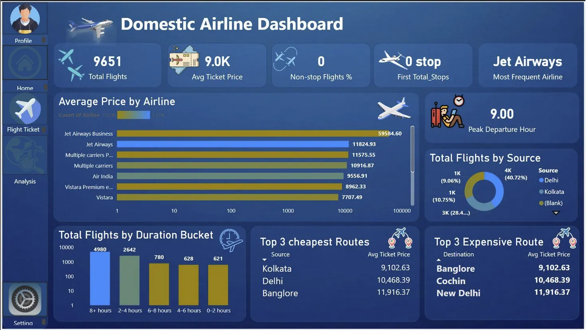

Airline data · Power BI / DAX
Domestic Airline KPI Dashboard
A star-schema model with DAX measures comparing pricing, routes and performance across 12 airlines.
- ScreenshotPower BI dashboard · screenshot
- CodeProject on GitHub
- Flights
- 9,651
- Airlines
- 12 (per README)
- Tools
- Power BI · DAX · Power Query
- Model
- Star schema
Twelve airlines, one view.
Source: READMEAn interactive airline analytics dashboard built in Power BI. It analyses a dataset of 9,651 domestic flights across 12 airlines to pull out pricing, route and scheduling insights.
The flight data sits in a star-schema model with DAX measures, prepared and cleaned in Power Query.
The Power BI report.

Seven views.
Source: READMETotal flights
A KPI for the full flight count.
Price by airline
Average ticket price for each airline.
Peak departures
The busiest departure hours.
Duration buckets
Flights grouped by duration.
Cheapest routes
The top 3 cheapest routes.
Priciest routes
The top 3 most expensive routes.
By source
Flight distribution by source city.
How it was built.
Source: README- 01
Clean in Power Query
Data cleaning and transformation of the 9,651 flight records.
- 02
Model
A star-schema data model.
- 03
Measure with DAX
DAX measures for the KPIs and comparisons.
- 04
Design
A single-page report built for comparison across airlines and routes.
About the dataset.
Source: README- Records
- 9,651 flights
- Airlines
- 12
- Source
- A custom, self-created dataset (per the project README); no external data
Why this one is a screenshot.
The repository holds the dashboard image but not the .pbix file or the dataset, so there is nothing genuine to rebuild or embed here. If the Power BI report is published, it can be embedded on this page.